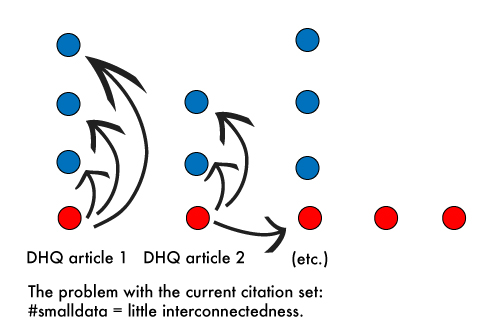

To get a sense of what we're working with, here's a first pass visualization using all the citation network data: 110 DHQ articles. Each of the involved written pieces--both internal (DHQ articles) and external (cited non-DHQ articles, books, etc.) is represented as a node (circle), and the edges (links) among the circles are directed to connect the source node (the DHQ article in question) to each of its targets (each piece cited in the DHQ article's bibliography). Each edge is further given a weight number corresponding to how many times the target node is mentioned within the source DHQ article's text, with a weight of 1 meaning the target is in the bibliography but not mentioned in the article text, 2 meaning a single mention within the main article text, and so on.
Just taking all the DHQ citation data at one leap doesn't yield an interesting visualization; there are too many nodes for effective labeling, though a few articles with unusually long bibliographies (i.e. pointing to many target nodes) are visible (e.g. dhq-00015 and dhq-000093). The small number of DHQ articles (110) coupled with the relatively poor interconnectedness of the citations will yield a variation on this kind of stacked configuration regardless of layout,

where each DHQ article is mostly linked to citations unshared by other articles, with relatively few DHQ articles sharing cited items or linking to other DHQ pieces. While the citation network for DHQ may not yet be richly interwoven, we can add some filters and other measures to highlight some interesting points in this dataset...
 Created by Amanda Visconti in Spring 2012. See my Twitter / blog / portfolio. Go back to the View DHQ home page.
Created by Amanda Visconti in Spring 2012. See my Twitter / blog / portfolio. Go back to the View DHQ home page.